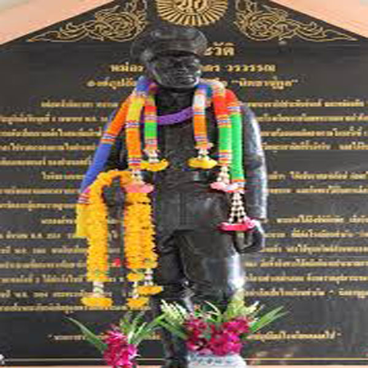

แนะนำโรงเรียน
โรงเรียนท่าเรือ "นิตยานุกูล" เปิดทำการสอนครั้งแรก เมื่อวันที่ 29 มิถุนายน 2479
ประเภทของโรงเรียน :สหศึกษา มัธยมศึกษาขนาดใหญ่ เปิดสอนตั้งแต่ชั้นมัธยมศึกษาปีที่1-6 จำนวน 48 ห้องเรียน
วิสัยทัศน์ :คุณธรรมนำความรู้ คู่เทคโนโลยี มีพลานามัยสมบูรณ์
อัตลักษณ์ :ลูกนิตย์น่ารัก
เอกลักษณ์ :นิตยาน่าอยู่น่าเรียน
อุดมการณ์ :ความรู้ คู่ความดี มีทักษะ พลสมบูรณ์
ปรัชญญา:นิมิตตํ สาธุรูปานํ กตญญูกตเวทิตา ความกตัญญูกตเวที เป็นเครื่องหมายของคนดี
อักษรย่อ: น.ก.
สีประจำโรงเรียน:ขาว-แดง
ขาว: ความสะอาด อ่อนน้อม รวมหมู่คณะได้
แดง: ความแกร่งกล้า

แนะนำโรงเรียน
หม่อมเจ้านิตยากร วรวรรณ เป็นโอรสองค์ที่ 9 ในพระเจ้าบรมวงศ์เธอกรมพระนราธิปประพันธ์พงศ์ และหม่อมผัน วรวรรณ ประสูติเมื่อวันพุธที่ 5 เมษายน พ.ศ. 2436 (ปีมะเส็ง)
ทรงศึกษาที่วังวรวรรณ, ราชวิทยาลัย และโรงเรียนนายร้อยทหารบกตามลำดับ ทรงได้ถวายตัวเป็นมหาดเล็กในสมเด็จเจ้าฟ้าประชาธิปก-ศักดิ์เดช (รัชกาลที่ 7)
ในขณะที่ทรงมียศเป็นนายร้อยเอกเกิดสงครามโลกครั้งที่ 1 ได้ทรงอาสาไปราชการสงครามในตำแหน่งผู้บังคับกอง ในราชการครั้งนั้นทรงได้รับพระราชทานเหรียญรามาธิบดีชั้นอัศวิน
และได้รับเหรียญเรยิอองคอนเนอร์ ของประเทศฝรั่งเศสด้วย
ในรัชการพระบาทสมเด็จพระปกเกล้าเจ้าอยู่หัวรัชการที่ 7 ทรงพระกรุณาโปรดเกล้าฯ ให้เป็นราชองค์รักษ์ ต่อมาได้กราบถวายบังคมลาออกจากราชการมาประกอบอาชีพส่วนตัวบริหารกิจการรถไฟสายท่าเรือ – พระพุทธบาท
และยังทรงได้รับการเลือกตั้งเป็นสมาชิกสภาผู้แทนราษฎรของจังหวัดพระนครศรีอยุธยาอีกด้วย
พระองค์ทรงสมรสกับหม่อมแก้ว เอี่ยมจำนง มีโอรสและธิดารวม 8 ท่าน พระองค์ได้ถึงชีพิตักษัย เมื่อวันอังคารที่ 16 มีนาคม พ.ศ. 2514 รวมพระชนมายุได้ 77 ปีเศษ พระกรุณาของหม่อมเจ้านิตยากรวรวรรณ
ที่มีต่อโรงเรียนท่าเรือ “นิตยานุกูล” ในปี พ.ศ. 2481 ทรงรับเป็นธุระในเรื่องการก่อสร้างอาคารเรียนหลังแรกในที่ดินของวัดหนองแห้ว ทรงใช้ทุนทรัพย์ส่วนพระองค์เพิ่มเติมงบประมาณที่กระทรวงศึกษาธิการ (กระทรวงธรรมการขณะนั้น)
จัดสรรให้ แต่ไม่เพียงพอ อีกทั้งยังทรงได้ผลักดันงบประมาณการก่อสร้างอาคารหลังที่ 2 ได้สำเร็จในปี พ.ศ. 2481 ทรงมีพระทัยช่วยพัฒนาโรงเรียนให้เจริญรุ่งเรืองอย่างสม่ำเสมอ ด้วยความอุปการะของพระองค์ในปี พ.ศ. 2494
กระทรวงศึกษาธิการ จึงพิจารณาเปลี่ยนชื่อโรงเรียนประจำอำเภอท่าเรือเป็นโรงเรียนท่าเรือ “นิตยานุกูล” เพื่อถวายเป็นพระเกียรติเชิดชูคุณความดีที่พระองค์ทรงมีต่อการศึกษาของชาวอำเภอท่าเรือ